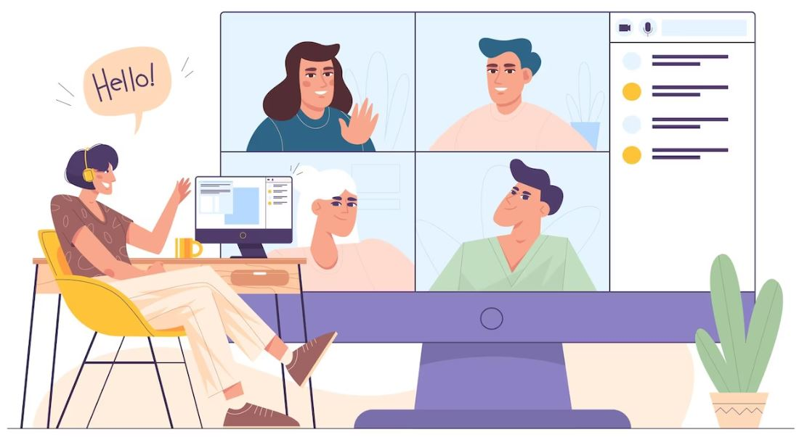

"Beni duyabiliyor musun/görebiliyor musun?" - Bu ifade, diğer kişinin sizi net bir şekilde duyup veya göremediğini kontrol etmenin harika bir yoludur.


"Seni görmek çok güzel!"- Bu ifade, bir ortam oluşturmanıza yardımcı olabilecek samimi ve konuksever bir ifadedir.
"Günün/haftanın nasıl geçti?"- Bu ifade, bir sohbet başlatmanın ve arayı kapatmanın iyi bir yoludur

"Bugün konuşmaya zaman ayırdığınız için teşekkür ederiz."- Bu ifade, kendi adına teşekkür etmenin kibar bir yoludur.
"Özür dilerim, tekrarlayabilir misin?"- Diğer kişinin söylediklerini tam olarak duymadıysanız onlardan kendilerini tekrarlamalarını isteyebilirsiniz.

WELCOME TO BLUE ! 👋